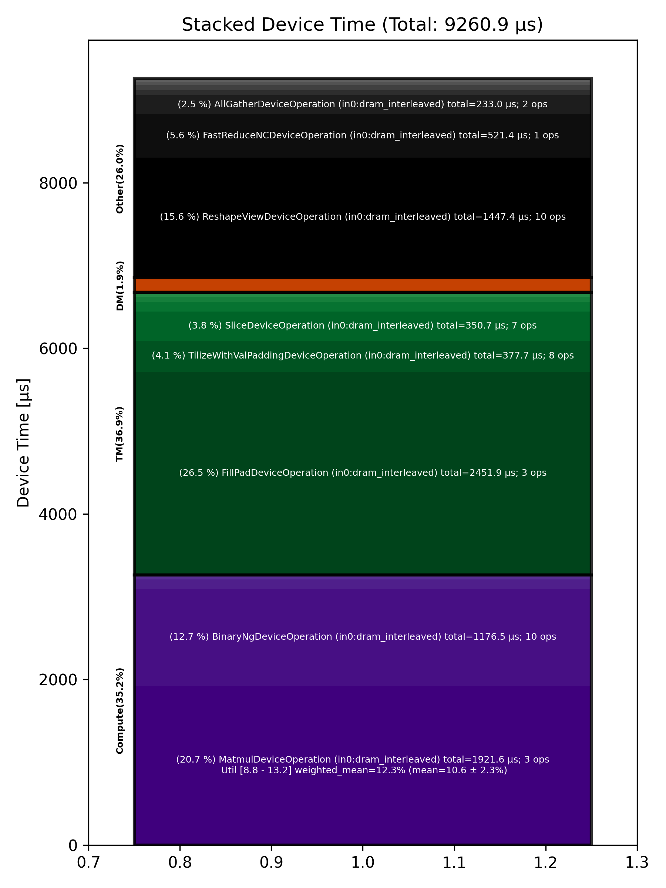

🚀 Performance Report 🚀 ======================== ID Total % Bound OP Code Device Device Time Op-to-Op Gap Cores DRAM DRAM % FLOPs FLOPs % Math Fidelity ------------------------------------------------------------------------------------------------------------------------------------------------------------------------ 18 0.6 % LayerNormDeviceOperation 20 110 μs 16 BF16, BF16 => BF16 60 0.2 % ReshapeViewDeviceOperation 18 30 μs 1 μs 72 BF16 => BF16 93 0.7 % UntilizeWithUnpaddingDeviceOperation 19 9 μs 118 μs 45 BF16 => BF16 125 2.0 % RepeatDeviceOperation 19 59 μs 281 μs 72 BF16 => BF16 153 2.0 % TilizeWithValPaddingDeviceOperation 12 292 μs 49 μs 45 BF16 => BF16 184 8.9 % SLOW MatmulDeviceOperation 32 x 2880 x 736 5 1,393 μs 142 μs 23 54 GB/s 18.8 % 3.1 TFLOPs 13.2 % HiFi4 BF16 x BFP8 => BF16 221 0.1 % BinaryNgDeviceOperation 19 22 μs 1 μs 72 BF16, BF16 => BF16 256 0.1 % UntilizeWithUnpaddingDeviceOperation 9 24 μs 1 μs 32 BF16 => BF16 263 0.9 % SliceDeviceOperation 2 155 μs 1 μs 72 BF16 => BF16 320 0.2 % TilizeWithValPaddingDeviceOperation 9 28 μs 1 μs 32 BF16 => BF16 341 0.1 % UnaryDeviceOperation 23 9 μs 1 μs 72 BF16 => BF16 380 0.1 % BinaryNgDeviceOperation 18 18 μs 1 μs 72 BF16, BF16 => BF16 400 0.1 % UntilizeWithUnpaddingDeviceOperation 5 24 μs 1 μs 32 BF16 => BF16 433 0.9 % SliceDeviceOperation 4 154 μs 1 μs 72 BF16 => BF16 475 0.2 % TilizeWithValPaddingDeviceOperation 17 28 μs 1 μs 32 BF16 => BF16 505 0.1 % UnaryDeviceOperation 12 9 μs 1 μs 72 BF16 => BF16 537 0.1 % BinaryNgDeviceOperation 12 19 μs 1 μs 72 BF16, BF16 => BF16 559 0.1 % UnaryDeviceOperation 6 13 μs 1 μs 72 BF16 => BF16 584 0.5 % BinaryNgDeviceOperation 1 15 μs 79 μs 72 BF16, BF16 => BF16 640 1.1 % BinaryNgDeviceOperation 9 14 μs 170 μs 72 BF16, BF16 => BF16 666 6.1 % SLOW MatmulDeviceOperation 32 x 384 x 2880 25 496 μs 547 μs 45 85 GB/s 29.4 % 4.6 TFLOPs 9.9 % HiFi4 BF16 x BFP8 => BF16 689 1.4 % ReduceScatterDeviceOperation 0 178 μs 56 μs 24 BF16 => BF16 721 2.4 % AllGatherDeviceOperation 0 180 μs 227 μs 40 BF16 => BF16 741 0.5 % BinaryNgDeviceOperation 27 84 μs 1 μs 72 BF16, BF16 => BF16 801 8.0 % ReshapeViewDeviceOperation 8 1,244 μs 125 μs 72 BF16 => BF16 819 0.3 % TypecastDeviceOperation 21 58 μs 1 μs 72 BF16 => FP32 837 0.3 % ReshapeViewDeviceOperation 27 46 μs 1 μs 72 FP32 => FP32 892 0.2 % SLOW MatmulDeviceOperation 32 x 2880 x 32 16 33 μs 1 μs 1 14 GB/s 4.9 % 0.2 TFLOPs 8.8 % HiFi2 FP32 x BFP8 => FP32 909 0.0 % TypecastDeviceOperation 31 2 μs 2 μs 1 FP32 => BF16 936 0.0 % FillPadDeviceOperation 1 3 μs 2 μs 1 BF16 => BF16 985 0.2 % PadDeviceOperation 12 37 μs 1 μs 2 BF16 => BF16 1022 0.0 % FillPadDeviceOperation 11 4 μs 2 μs 1 BF16 => BF16 1034 0.3 % TopKDeviceOperation 28 44 μs 2 μs 1 BF16 => BF16 1076 0.0 % SliceDeviceOperation 22 1 μs 2 μs 1 BF16 => BF16 1108 0.0 % SliceDeviceOperation 22 1 μs 2 μs 1 UINT16 => UINT16 1131 0.9 % TypecastDeviceOperation 29 2 μs 152 μs 1 UINT16 => INT32 1182 0.6 % ReshapeViewDeviceOperation 11 5 μs 98 μs 16 INT32 => INT32 1195 1.0 % UntilizeWithUnpaddingDeviceOperation 29 3 μs 167 μs 16 INT32 => INT32 1222 0.5 % UntilizeWithUnpaddingDeviceOperation 3 3 μs 90 μs 16 INT32 => INT32 1273 0.9 % PermuteDeviceOperation 12 3 μs 158 μs 16 INT32 => INT32 1311 0.5 % PermuteDeviceOperation 10 3 μs 85 μs 16 INT32 => INT32 1327 1.0 % ConcatDeviceOperation 6 2 μs 178 μs 32 INT32, INT32 => INT32 1368 0.5 % PermuteDeviceOperation 13 3 μs 91 μs 16 INT32 => INT32 1398 1.0 % TilizeWithValPaddingDeviceOperation 15 7 μs 170 μs 16 INT32 => INT32 1439 0.8 % SoftmaxDeviceOperation 10 24 μs 111 μs 72 BF16 => BF16 1457 2.9 % AllGatherDeviceOperation 0 53 μs 445 μs 24 INT32 => INT32 1474 1.6 % AllBroadcastDeviceOperation 8 38 μs 230 μs 4 BF16 => BF16 1506 0.6 % UntilizeWithUnpaddingDeviceOperation 24 7 μs 102 μs 1 BF16 => BF16 1566 1.0 % UntilizeWithUnpaddingDeviceOperation 11 7 μs 165 μs 1 BF16 => BF16 1583 0.5 % UntilizeWithUnpaddingDeviceOperation 6 7 μs 74 μs 1 BF16 => BF16 1627 1.0 % UntilizeWithUnpaddingDeviceOperation 17 7 μs 170 μs 1 BF16 => BF16 1665 0.6 % ConcatDeviceOperation 8 2 μs 95 μs 64 BF16, BF16 => BF16 1672 1.6 % TilizeWithValPaddingDeviceOperation 1 5 μs 268 μs 2 BF16 => BF16 1718 0.7 % ReshapeViewDeviceOperation 15 10 μs 116 μs 8 INT32 => INT32 1739 0.9 % SliceDeviceOperation 29 2 μs 159 μs 8 INT32 => INT32 1781 1.6 % UntilizeWithUnpaddingDeviceOperation 23 14 μs 256 μs 8 INT32 => INT32 1806 0.7 % SliceDeviceOperation 7 4 μs 118 μs 72 INT32 => INT32 1844 0.7 % TilizeWithValPaddingDeviceOperation 22 8 μs 118 μs 8 INT32 => INT32 1884 0.7 % BinaryNgDeviceOperation 18 11 μs 109 μs 72 INT32, INT32 => INT32 1921 1.0 % BinaryNgDeviceOperation 8 3 μs 173 μs 72 INT32, INT32 => INT32 1925 1.5 % ReshapeViewDeviceOperation 27 7 μs 256 μs 8 INT32 => INT32 1983 0.6 % ReshapeViewDeviceOperation 10 4 μs 98 μs 8 BF16 => BF16 2013 0.9 % UntilizeWithUnpaddingDeviceOperation 19 7 μs 154 μs 1 INT32 => INT32 2032 0.5 % UntilizeWithUnpaddingDeviceOperation 5 6 μs 83 μs 1 BF16 => BF16 2069 1.3 % ScatterDeviceOperation 23 60 μs 161 μs 1 BF16, INT32 => BF16 2095 0.4 % TilizeWithValPaddingDeviceOperation 6 5 μs 56 μs 64 BF16 => BF16 2141 1.0 % ReshapeViewDeviceOperation 19 23 μs 152 μs 2 BF16 => BF16 2152 0.4 % UntilizeDeviceOperation 1 4 μs 71 μs 2 BF16 => BF16 2197 3.3 % MeshPartitionDeviceOperation 29 2 μs 569 μs 16 BF16 => BF16 2221 0.8 % TilizeWithValPaddingDeviceOperation 31 4 μs 134 μs 1 BF16 => BF16 2258 1.1 % TransposeDeviceOperation 20 2 μs 190 μs 72 BF16 => BF16 2274 1.8 % ReshapeViewDeviceOperation 24 50 μs 258 μs 72 BF16 => BF16 2320 5.8 % BinaryNgDeviceOperation 5 943 μs 61 μs 72 BF16, BF16 => BF16 2365 14.2 % FillPadDeviceOperation 19 2,445 μs 1 μs 72 BF16 => BF16 2395 3.0 % FastReduceNCDeviceOperation 17 521 μs 1 μs 72 BF16 => BF16 2403 0.2 % SliceDeviceOperation 25 33 μs 1 μs 72 BF16 => BF16 2438 0.3 % BinaryNgDeviceOperation 3 48 μs 1 μs 72 BF16, BF16 => BF16 2477 0.2 % ReshapeViewDeviceOperation 31 29 μs 1 μs 72 BF16 => BF16 ------------------------------------------------------------------------------------------------------------------------------------------------------------------------ 100.0 % 78 device ops, 0 host ops, 0 signposts 9,261 μs 7,961 μs 📊 Stacked report 📊 ==================== Total % Op Code Device Time Sum Op Count Op Category Min FLOPs Max FLOPs Mean FLOPs Std FLOPs Weighted Mean FLOPs ------------------------------------------------------------------------------------------------------------------------------------------------------------------------------ 26.48 % FillPadDeviceOperation (in0:dram_interleaved) 2,451.89 μs 3 TM 20.75 % MatmulDeviceOperation (in0:dram_interleaved) 1,921.56 μs 3 Compute 8.80 % 13.18 % 10.62 % 2.29 % 12.25 % 15.63 % ReshapeViewDeviceOperation (in0:dram_interleaved) 1,447.45 μs 10 Other 12.70 % BinaryNgDeviceOperation (in0:dram_interleaved) 1,176.46 μs 10 Compute 5.63 % FastReduceNCDeviceOperation (in0:dram_interleaved) 521.36 μs 1 Other 4.08 % TilizeWithValPaddingDeviceOperation (in0:dram_interleaved) 377.74 μs 8 TM 3.79 % SliceDeviceOperation (in0:dram_interleaved) 350.71 μs 7 TM 2.52 % AllGatherDeviceOperation (in0:dram_interleaved) 233.00 μs 2 Other 1.92 % ReduceScatterDeviceOperation (in0:dram_interleaved) 178.09 μs 1 DM 1.28 % UntilizeWithUnpaddingDeviceOperation (in0:dram_interleaved) 118.78 μs 12 TM 1.18 % LayerNormDeviceOperation (in0:dram_interleaved) 109.58 μs 1 Compute 0.67 % TypecastDeviceOperation (in0:dram_interleaved) 62.41 μs 3 TM 0.64 % ScatterDeviceOperation (in0:dram_interleaved) 59.59 μs 1 Other 0.64 % RepeatDeviceOperation (in0:dram_interleaved) 59.45 μs 1 Other 0.48 % TopKDeviceOperation (in0:dram_interleaved) 44.09 μs 1 Other 0.41 % AllBroadcastDeviceOperation (in0:dram_interleaved) 38.16 μs 1 Other 0.40 % PadDeviceOperation (in0:dram_interleaved) 36.75 μs 1 TM 0.34 % UnaryDeviceOperation (in0:dram_interleaved) 31.48 μs 3 Compute 0.26 % SoftmaxDeviceOperation (in0:dram_interleaved) 23.62 μs 1 Compute 0.09 % PermuteDeviceOperation (in0:dram_interleaved) 7.98 μs 3 TM 0.04 % UntilizeDeviceOperation (in0:dram_interleaved) 4.04 μs 1 TM 0.03 % ConcatDeviceOperation (in0:dram_interleaved) 3.24 μs 2 TM 0.02 % TransposeDeviceOperation (in0:dram_interleaved) 1.85 μs 1 TM 0.02 % MeshPartitionDeviceOperation (in0:dram_interleaved) 1.59 μs 1 Other ------------------------------------------------------------------------------------------------------------------------------------------------------------------------------
